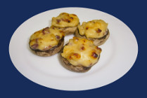

Champiñones Rellenos

Lavamos bien los champiñones, les quitamos los tallos, y estos los picamos bien menudos para sofreírlos junto con la cebolla. Cuando le quede poco, le añadimos la carne picada, sazonamos y sofreímos bien.
Rellenamos los champiñones con el sofrito, por encima lo untamos con queso azul y pasamos al horno, ya precalentado, durante 15 minutos a 180º.
El queso azul se puede sustituir por queso rallado que más nos guste.
Ingredientes
- 12 champiñones grandes
- 1 cebolla pequeña picadita
- 150 g de carne picada
- Queso azul para untar
- Aceite
- Sal
Consejo
- Para que queden más blancos los champiñones, despues de lavarlos, echarlos en agua con el zumo de medio limón.
Síguenos
Actualizaciones por correo electrónico
Introduce tu correo electrónico
y descubre las nuevas recetas